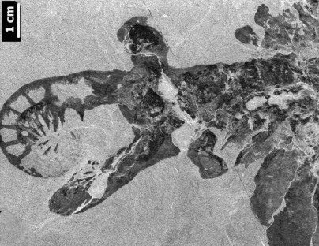
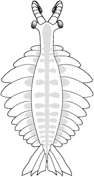
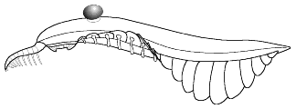

Anomalocaris
canadensis #1
There are a number of
complete specimens of Anomalocaris canadensis, but
this is perhaps the best preserved. It shows the elongate body, narrow
anterior, stalked eyes, and imbricate fantail, as well as the flexible
nature of the lateral swimming lobes. Although there is no scale
provided in this image, the length of the specimen is about 20 cm
(<8
inches) Parts of the anterior appendages are visible, folded ventrally
(right).
It is also one of the few Anomalocaris specimen
images that I've seen in color.
|
Anomalocaris
canadensis #2

In this partial specimen of
Anomalocaris canadensis, the large anterior
appendage has been prepared out from beneath the overlying body. the
tip of the other appendage shows near the diagonal break on the left,
and the bottom of the circular mouth is also exposed near the top of
the specimen. This was one of the specimens worked on by Whittington
and Briggs that linked Whiteaves' Anomalocaris with
Walcott's Peytoia with the anterior arms and mouth,
respectively, of a much larger creature.
|
Anomalocaris
canadensis #3

This detail on the head of
a specimen of Anomalocaris canadensis offers a
clear impression of how narrow the head and "neck" region is just
anterior to the first swimming lobes. It suggests that the
animal was able to turn its head and swivel its eyes as it hunted (as
depicted
in Collins 1996).
|
Anomalocaris
canadensis #4
Another image of the head
of Anomalocaris canadensis also accentuates how
narrow the anterior portion of the animal is. The distorted anterior
swimming lobes appear at the bottom of the image, while the wide
lateral reach of the anterior appendages indicate an impressive range
of
motion.
|

.
.
.
.
My
reconstruction of the dorsal
view of Anomalocaris canadensis captures a number
of details that
are not consistently dealt with in other reconstructions. The lateral
lobes
are treated as ventral, rather than dorsal features. The fantail does
not
overlap with the last lateral swimming lobes, but treated as occupying
their
own segments. If the fantail fins are homologous to the lateral lobes
(as
suggested by Opabinia and Parapeytoia),
then they should
not co-occupy body segments. |
Above:
reconstruction of Anomalocaris canadensis (Collins
1996). Note rather massive "neck" lateral lobes rather
dorsally placed, and significant overlap between rear lateral lobes and
fantail.
.
My
modification of the reconstruction offered by Collins 1996 (top) shifts
the placement of the lateral swimming lobes to a more ventral position,
shifts the dorsal fantail posterior of the last pair of lateral lobes,
and makes the head and neck more narrow and gracile. This seems to
conform more closely to the specimen images above. |
|
|
|
Laggania
cambria #1

.
In contrast to Anomalocaris
canadensis, Laggania shows a wide,
parabolic head, with eyes placed well behind the mouth and anterior
appendages. Collins (1996) argues that the mouth of Laggania
is more oval, with long axis oriented anterior-posterior, and with a
roughly rectangular aperture. The anterior appendages, shown lying to
each side of the mouth, are not as large as those of Anomalocaris
canadensis, and bear long, delicate spines (visible in
better-preserved specimens than this). |
Laggania
cambria #2
 This foreshortened specimen of Laggania
shows additional differences from Anomalocaris.
There is no trace of a fantail, and the lateral lobes reach maximum
width well behind the front half of the body.
Horizontal support rods are associated with each pair of lateral lobes.
Lateral
lobes extend outward about 50% of body width.
This foreshortened specimen of Laggania
shows additional differences from Anomalocaris.
There is no trace of a fantail, and the lateral lobes reach maximum
width well behind the front half of the body.
Horizontal support rods are associated with each pair of lateral lobes.
Lateral
lobes extend outward about 50% of body width. |
---- Laggania cambria --------
Anomalocaris canadensis
.
.
.
.
.
Collins
(1996) demonstrated well the contrast between the heads of Laggania
(left) and Anomalocaris (right). Laggania's
eyes do not seem as well suited for an
active hunter, and its anterior appendages (Briggs' "Appendage F") bear
comb-like
spines that seem better suited for plankton sweeping than subduing
trilobites.
The mouth orientation and shape differences expoused by Collins may not
be
as distinctive as shown. There is variability in the mouth shape of
both Laggania and Anomalocaris,
and both may tend toward a
circular outline. |
The
reconstruction of Laggania by Collins (1996)
suggests that the lateral lobes were extremely flexible, rather like
the swimming membrane of modern squid .or cuttlefish. This does not
seem quite consistent with the fossil specimens, in which the lobes
are typically preserved without much distortion, suggesting a certain
amount
of rigidity. |

My
reconstruction of the bauplan of Laggania cambria
is rather similar to that of Collins, but the lateral lobes are
extended outward more, and depicted as largely rigid, albeit capable of
flexing and movement similar to the fins of other swimming
animals.
|

The
bauplan of Laggania cambria suggests that it was
far less acrobatic than Anomalocaris
canadensis. Perhaps it cruised instead through the well-lit
waters near
the surface, sweeping clouds of zooplankton into its ovoid maw.

Even
with semi-rigid fins, the sinusoidal swimming movements suggested by
Whittington and Briggs (1985) are easily achieved. In this
reconstruction, the long, comb-like bristles on the anterior appendages
are not easily discerned. |
|
|